El món està ple d'històries que esperen ser explicades.
Ficció
Novel·les i relats que exploren la condició humana a través de la imaginació i la metàfora.
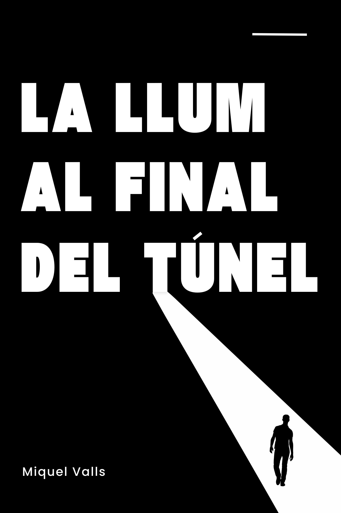
La llum al final del túnel
Miquel Valls
Una novel·la commovedora sobre la superació personal quan tot sembla perdut. El protagonista avança per un camí de dubtes i ferides, perseguint una llum encara llunyana, però possible. En aquest viatge, Miquel Valls explora la por, l'esperança i la resiliència, i ens recorda que, fins i tot en els moments més difícils, sempre pot existir una sortida.
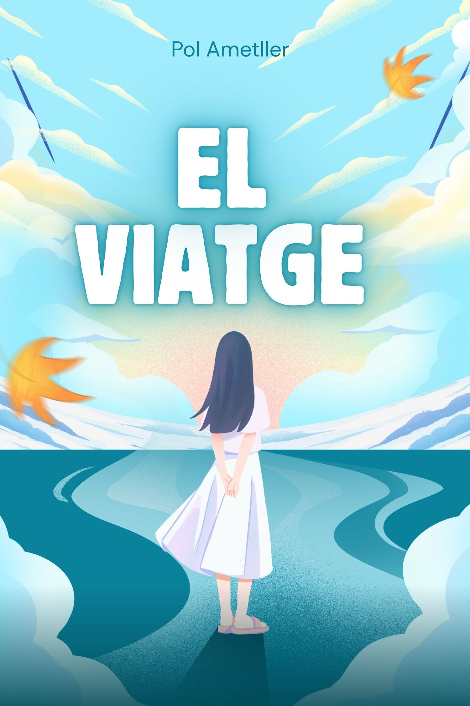
El viatge
Pol Ametller
Una jove emprèn un camí simbòlic a través de paisatges canviants que reflecteixen els seus dubtes, pors i anhels. El trajecte esdevé un procés de descoberta interior on cada obstacle l'obliga a redefinir què vol i qui és. Entre la nostàlgia del passat i la incertesa del futur, aprèn que el veritable destí no és un lloc, sinó la pròpia transformació.
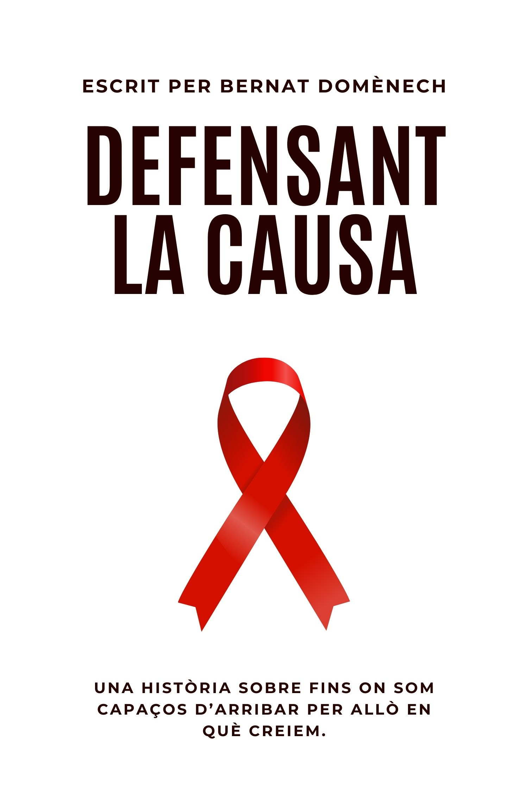
Defensant la causa
Bernat Domènech
Enmig d'un context social tens, el protagonista decideix implicar-se en una lluita que posa a prova les seves conviccions i els seus límits morals. La història retrata el cost personal de defensar allò en què es creu, així com els dilemes entre idealisme i realitat. Una reflexió intensa sobre el compromís, el sacrifici i la força de la solidaritat.
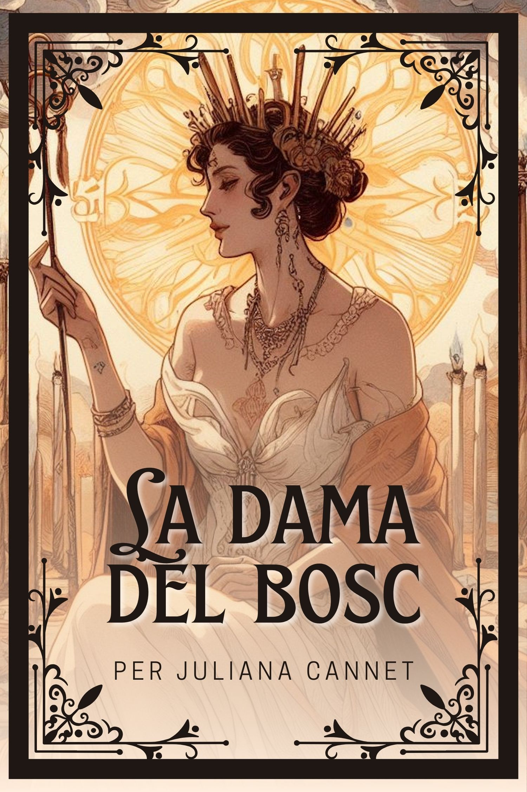
La dama del bosc
Julianna Canet
La novel·la narra la història d'una jove atrapada entre les expectatives del seu entorn i una força misteriosa que l'atrau cap al bosc. Aquest espai natural esdevé símbol de llibertat, desig i transformació personal. A mesura que s'endinsa en els seus secrets, la protagonista qüestiona les normes socials i descobreix una nova manera d'entendre's a si mateixa. Un relat intimista amb una atmosfera màgica i evocadora.
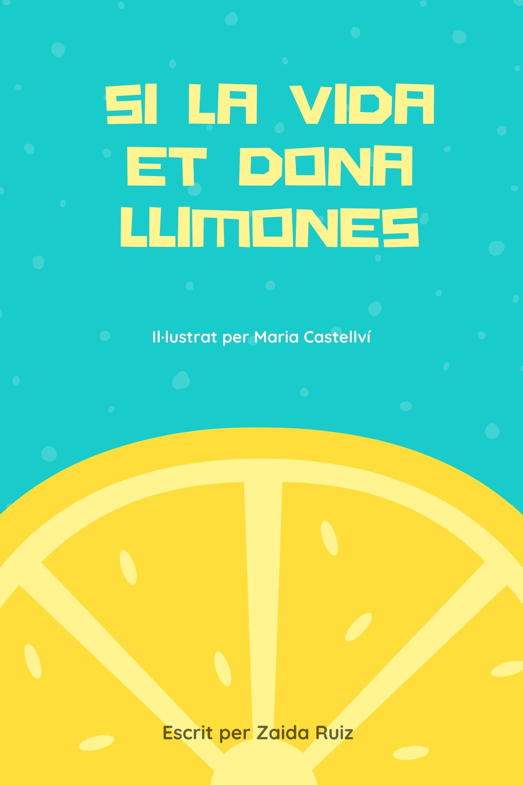
Si la vida et dona llimones
Júlia Puig
Una comèdia agredolça sobre com sobreviure als imprevistos de la vida quotidiana amb humor i resiliència. La protagonista transforma cada desastre en una oportunitat inesperada. A través d'aventures absurdes i personatges entranyables, l'autora ens regala una reflexió sobre l'acceptació i la lleugeresa davant l'adversitat.
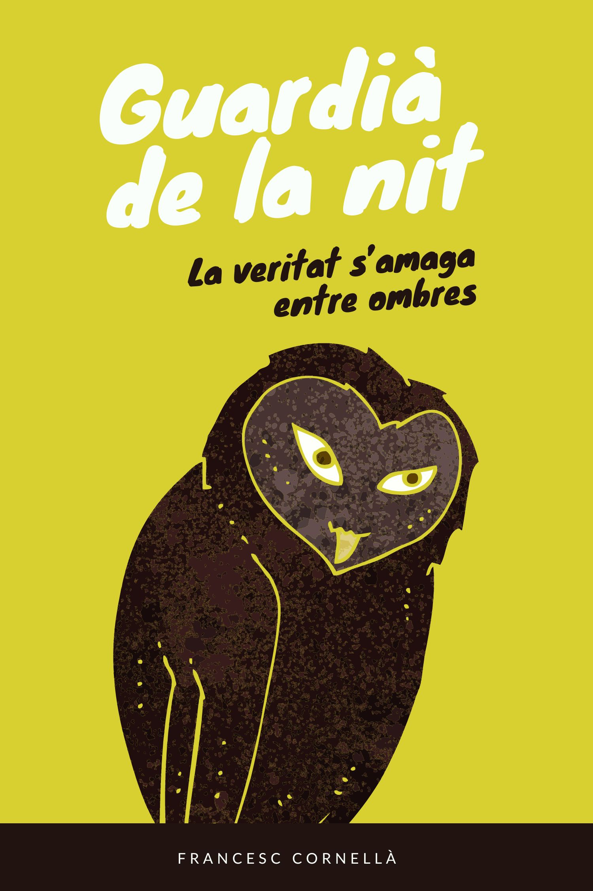
Guardià de la nit
Francesc Conrela
Un thriller ple de girs imprevistos on un vigilant nocturn descobreix per accident una conspiració que posa en risc la seva vida. La tensió s'acumula en cada capítol fins a un desenllaç explosiu. L'autor dissecciona els límits entre la lleialtat i la supervivència en un entorn urbà fosc i implacable.
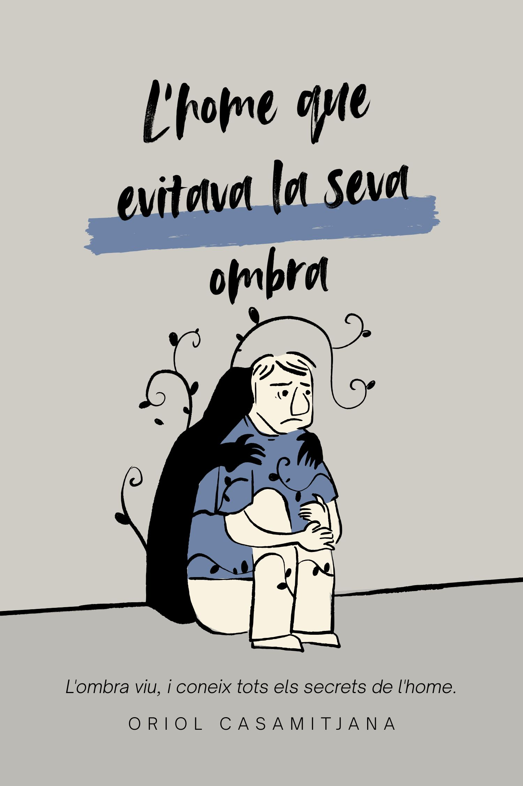
L'home que evitava la seva ombra
Oriol Casamitjana
Un relat sobre un home que ha construït la seva vida mirant sempre endavant, refusant examinar el seu passat. Però l'ombra sempre torna. Una novel·la psicològica sobre la culpa, la memòria i el preu de l'autoengany. Casamitjana escriu amb una precisió clínica que atrapa el lector des de la primera pàgina.
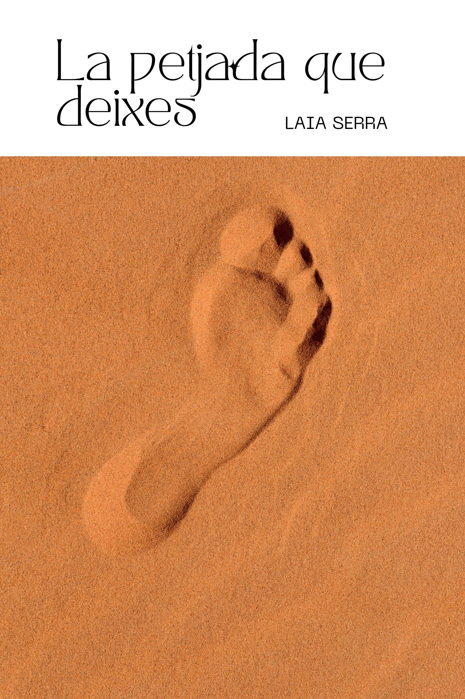
La petjada que deixes
Laia Serra
Una jove torna al poble on va créixer per liquidar l'herència de la seva àvia i es troba amb un passat que creia oblidat. La recerca de respostes la porta a replantejar-se la seva pròpia identitat. Serra construeix una narrativa càlida i emotiva sobre les arrels, el dol i la memòria familiar.
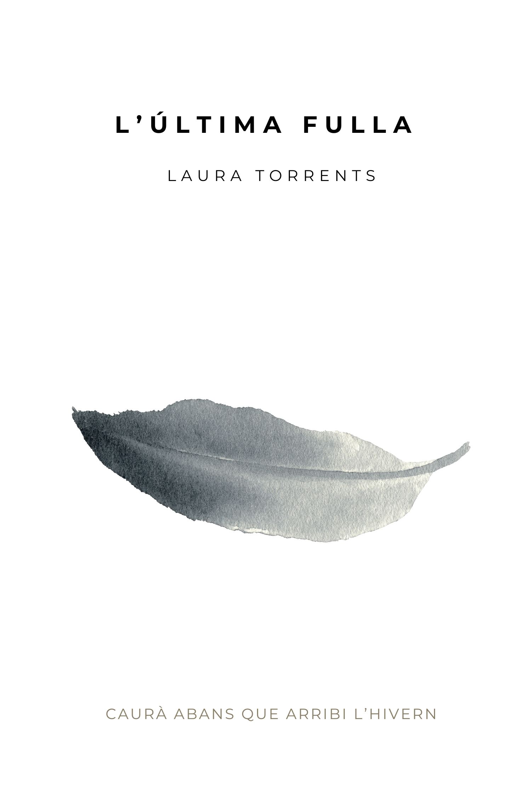
L'última fulla
Laura Torrents
Un dietari fictici escrit des del llit d'un hospital on una escriptora reivindica la bellesa de les coses petites davant la malaltia. Cada entrada és una cançó al present. Torrents escriu amb una delicadesa extraordinària, convertint la fragilitat en un acte de resistència literària. Un llibre que commou sense caure en el sentimentalisme.
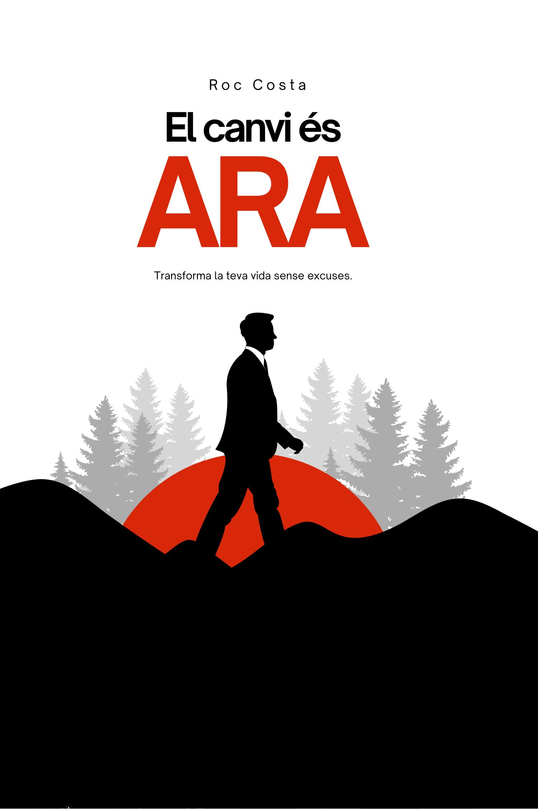
El camí és ara
Roc Costa
Un noi de vint anys abandona la seva vida planificada per emprendre una ruta a peu de Barcelona a Santiago. El que comença com una fugida es converteix en un retrobament amb ell mateix. Costa narra amb precisió lírica els paisatges externs i interns del camí, qüestionant el significat de l'èxit i la felicitat en la joventut contemporània.
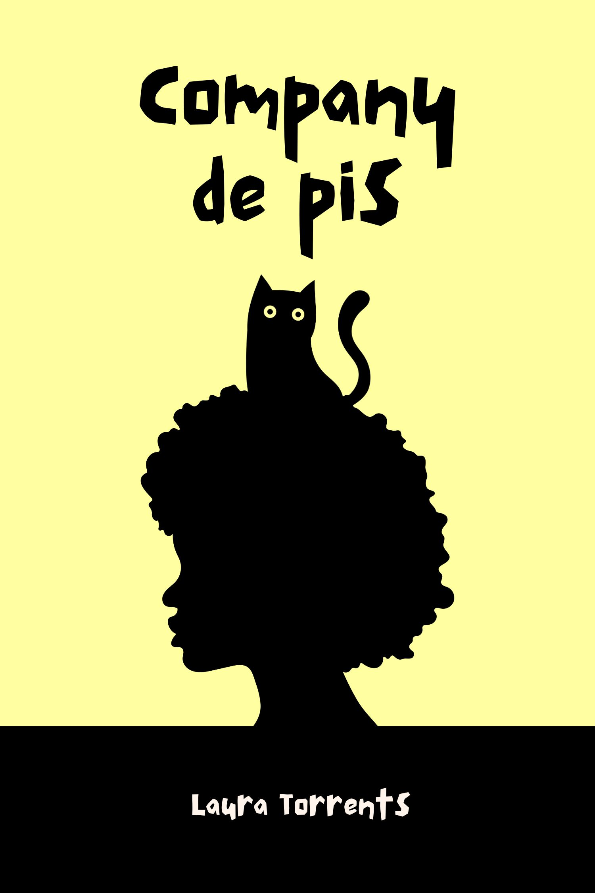
Company de pis
Laura Torrents
Quan una biòloga ordenada i un músic caòtic es veuen obligats a compartir pis a Barcelona, xoquen dos mons antagònics. El que semblava un malson es converteix en una comèdia sobre els límits, la tolerància i l'amistat inesperada. Torrents brilla amb diàlegs afilats i situacions absurdes que fan reflexionar sobre la convivència i les diferències.
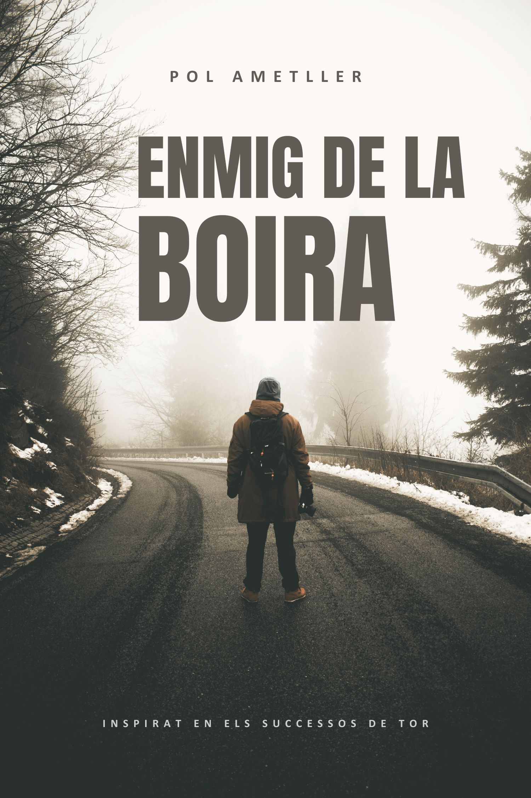
Enmig de la boira
Pol Ametller
Una detectora privada rep l'encàrrec de trobar una persona desapareguda en un poble de muntanya envoltat de boira i silenci. A mesura que avança, s'adona que ningú diu tota la veritat. Ametller construeix una atmosfera opressiva i hipnòtica, on la tensió s'acumula subtilment fins a un final que ho canvia tot.
Descobreix els nostres assaigs i obres de divulgació
No-ficció
Assaigs, guies i obres de divulgació que amplien la mirada i transformen la manera de pensar i actuar.
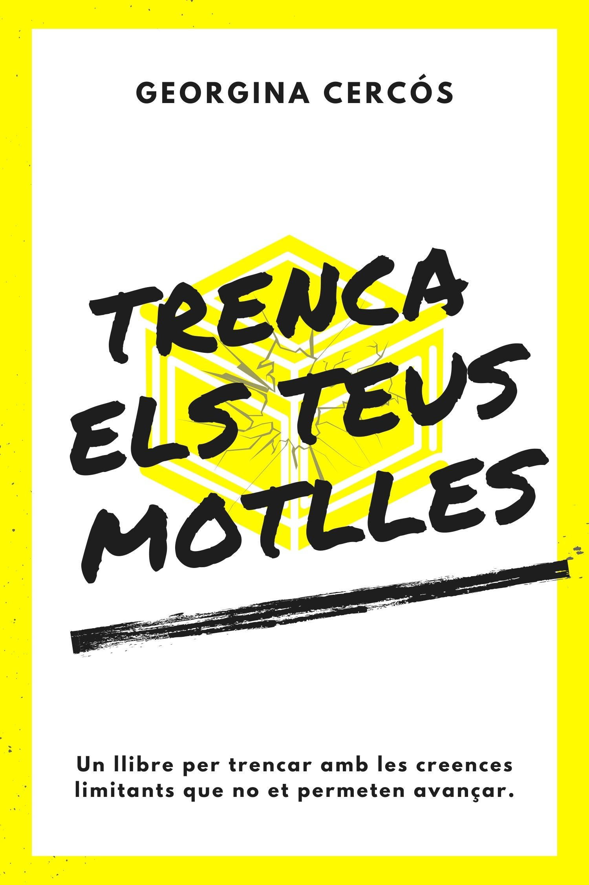
Trencant motlles
Georgina Cercós
Un llibre d'autoconeixement que convida a qüestionar les creences limitants que ens mantenen atrapats. Georgina Cercós ofereix eines pràctiques i reflexions potents per sortir de la zona de confort i construir una nova mentalitat. Una guia inspiradora per atrevir-se a canviar, créixer i redefinir els propis límits.
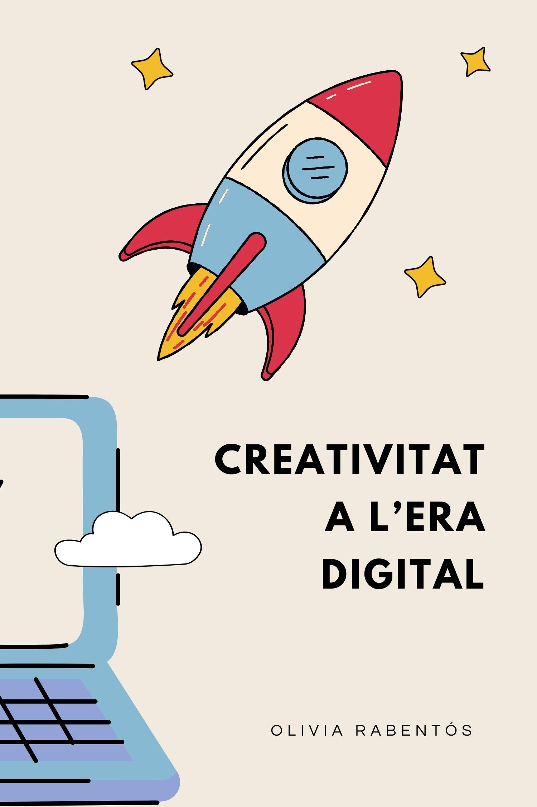
Creativitat a l'era digital
Olivia Rabentós
Un assaig fresc i actual sobre com la tecnologia transforma la manera de crear i innovar. Olivia Rabentós analitza el paper de les eines digitals, la intel·ligència artificial i les noves plataformes en el procés creatiu. Una lectura imprescindible per a professionals i estudiants que volen destacar en un món cada cop més connectat.
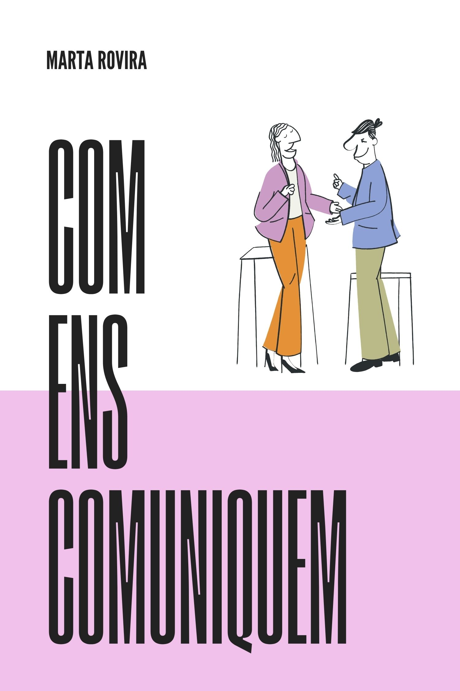
Com ens comuniquem
Marta Rovira
Aquest llibre explora les dinàmiques invisibles que modelen les nostres converses quotidianes, des del llenguatge verbal fins als silencis carregats de significat. A través d'històries entrellaçades, mostra com els malentesos, els prejudicis i les emocions condicionen les relacions personals i professionals. És una invitació a escoltar millor, parlar amb més consciència i construir vincles més honestos.
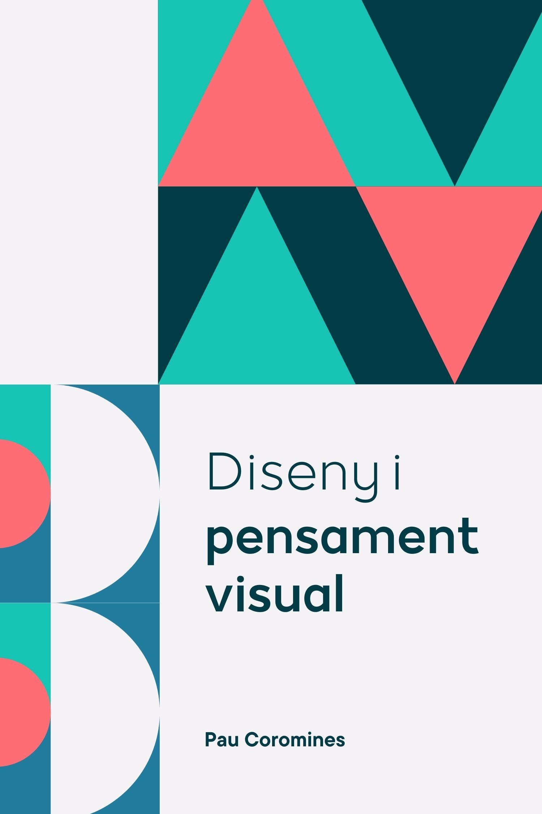
Disseny i pensament visual
Pau Coromines
Un assaig divulgatiu sobre la importància del pensament visual en la comunicació i la creativitat. L'autor explica com les imatges, esquemes i gràfics poden ajudar a comprendre idees complexes. Ofereix eines pràctiques per aplicar el disseny visual en l'àmbit professional i educatiu. És una obra orientada a millorar la capacitat d'innovar i comunicar.
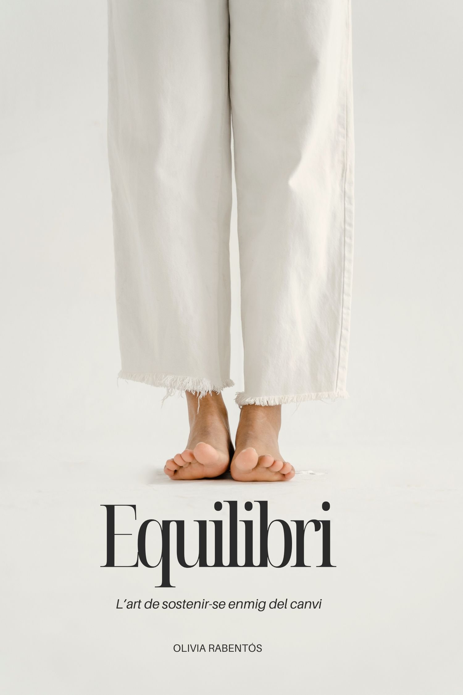
Equilibri
Olivia Rabentós
Una guia pràctica per recuperar l'equilibri en un món accelerat. Miralles combina neurociència, filosofia oriental i exercicis concrets per aprendre a gestionar l'estrès, millorar el son i reconnectar amb allò que és essencial. Un manual de vida moderna que acompanya el lector pas a pas cap a una existència més serena i significativa.
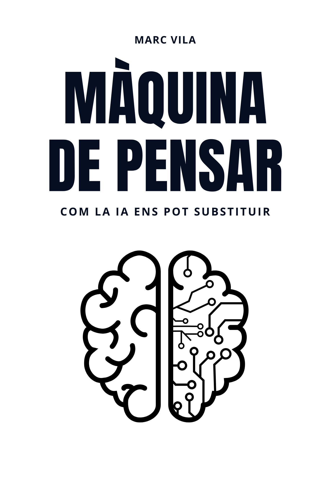
Màquina de pensar
Marc Vila
Una exploració rigorosa i accessible sobre com la intel·ligència artificial pensa, aprèn i decideix. Marc Vila desmunta mites i explica amb claredat els fonaments dels algoritmes que ja modelen la nostra vida quotidiana. Un llibre imprescindible per entendre el present i anticipar el futur tecnològic amb criteri propi.
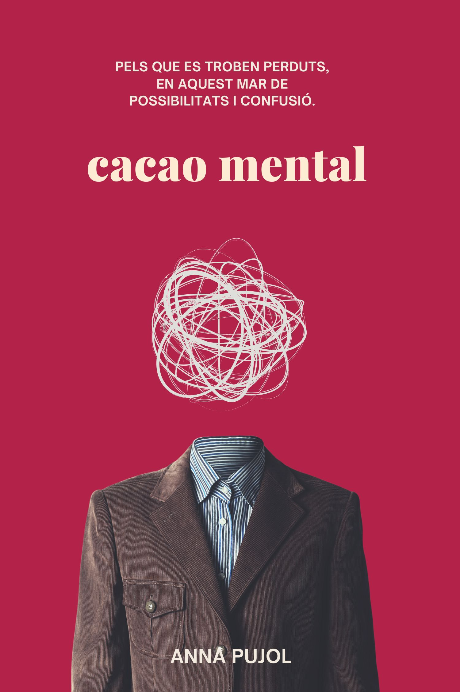
Cacao mental
Anna Pujol
Una psicòloga clínica explica amb humor i rigor per què el nostre cervell ens enganya, ens saboterja i, tot i així, ens permet sobreviure. Des dels biaixos cognitius fins als mecanismes de defensa, Pujol fa accessible la psicologia per a tothom. Un llibre que fa riure i pensar a parts iguals, i que acaba sent un manual de supervivència emocional.